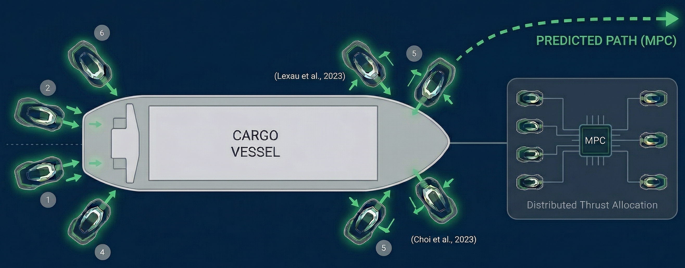
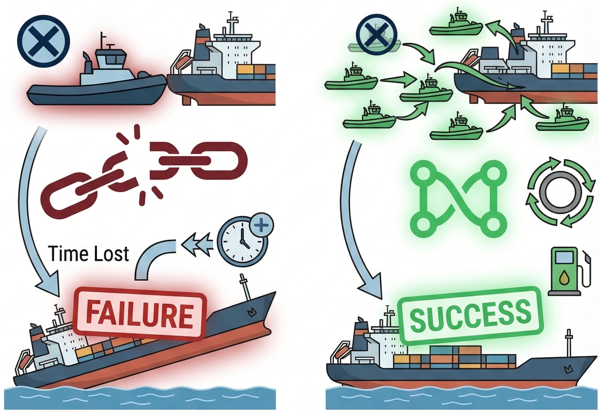
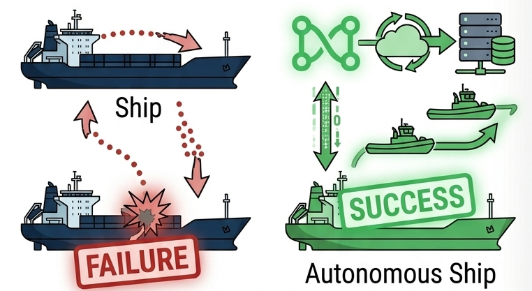
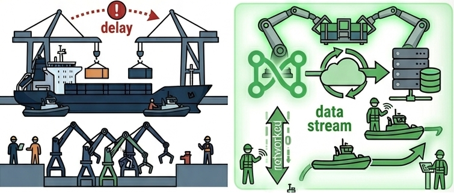
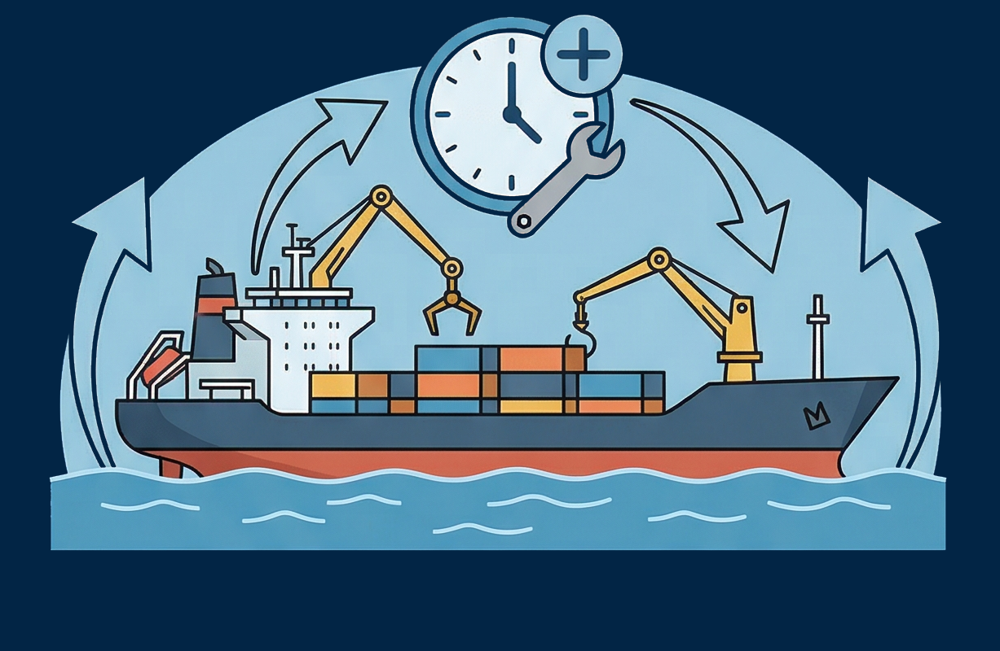
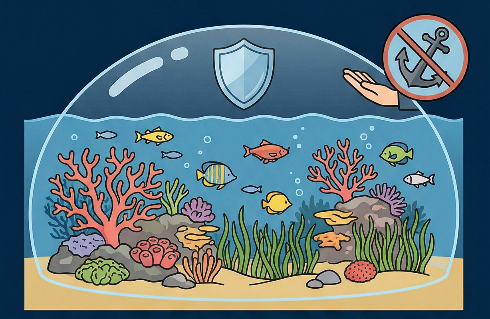
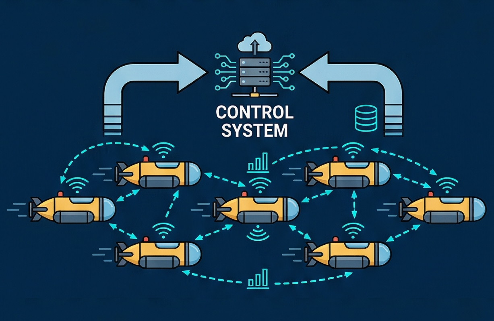

Cooperative Manipulation
The Future of Autonomous Harbor Operations
The transition toward autonomous shipping demands an evolution in harbor operations. Cooperative manipulation utilizes swarms of autonomous robotic agents to replace large, crewed tugboats, creating a redundant, precise, and environmentally sustainable gateway for the modern Smart Ports.

The Centralized Swarm
A decentralized swarm utilizes Model Predictive Control to manage the predicted path of the ship. Thrust is allocated locally across the agents, eliminating any single point of failure (Nesi et al., 2019).
MPC-Based Control
Model Predictive Control (MPC) allows the swarm to optimize maneuvers in real-time, accounting for dynamic environmental conditions and vessel responses, ensuring precise and adaptive control throughout the docking process.
Traditional Harbor Operations
- ✖ Human Factor: Susceptible to cognitive failure, fatigue, and communication breakdowns during complex docking.
- ✖ Asset Stress: Inconsistent force application leads to hull stress and fender damage.
- ✖ Environmental Impact: High-velocity prop-wash from massive diesel engines causes seabed scouring.
Autonomous Swarm Advantage
- ✔ Precision Control: Standardized, algorithmic maneuvers eliminate human cognitive failure (Lexau et al., 2023).
- ✔ Distributed Force: Balanced thrust allocation extends hull life and protects infrastructure (Choi et al., 2023).
- ✔ Sustainability: Electric-powered swarms reduce carbon footprint and underwater noise pollution.
Three Pillars of Autonomous Harbor Operations
Pillar 1: Operational Resilience
A swarm provides critical redundancy. If one unit fails, decentralized algorithms dynamically redistribute thrust requirements across the remaining fleet, preventing multi-million dollar maneuver failures and optimizing fuel logic.

Pillar 2: Mitigating Human Error
Historic data indicates that collisions frequently stem from inattentiveness or communication breakdown. Autonomous systems provide operational consistency, lowering insurance profiles and eliminating workplace injuries.

Pillar 3: The Scalable Smart Port
Swarms reduce down-time allowing for increased port utilization, maximizing existing infrastructure. This leads to improvement in the throughput of goods, and a more efficient global supply chain.

The Economics of Optimization
An often-overlooked financial benefit of cooperative manipulation is the strategic alignment of asset preservation.

Asset Life ExtensionDistributed force application prevents highly localized hull stress and protects port fendering systems from severe impact degradation (Esposito, 2009).

Seabed Ecosystem ProtectionReplacing giant diesel engines with electric swarms mitigates the high-velocity prop-wash that causes severe seabed scouring in shallow waters (Choi, 2020).

Adaptive Control ReliabilityEvent-triggered adaptive controls maintain crucial communication across the swarm even in noisy, unpredictable electronic environments (Geng et al., 2024).